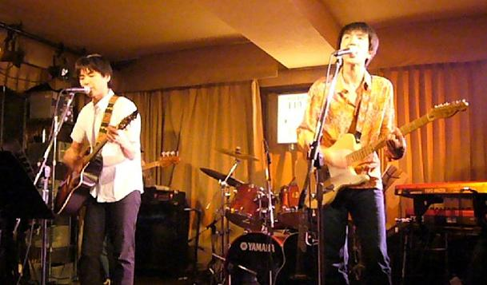
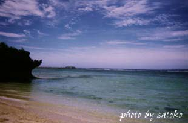

|
| introduction |
| history |
| discography |
| boards |
| special |
| link |
 | |
| name : 奥野利幸 Toshiyuki Okuno part : Vocal, Acoustic guitar, etc birthday : march, 26th, 1971 constellation : Aries blood group : O his home : tokyo |
name : 小井手仁徳 Masanori Koide part : Chorus, Electric & Acoustic guitar, etc birthday : march, 1st, 1970 constellation : Pisces blood group : A his home : fukuoka |
Daily-Echo were organized
誰にも邪魔されない環境で本格的に曲作りをしたいというコトで勤めていた会社を2年で退職し、１年ほど単身沖縄へと旅立つ。(奥野氏曰く、「酒飲んでただけなんですけど・・・(笑)。」)そして、約200曲程のアイデアの中から、数曲を完成させて帰京する。
そして、奥野氏がギターの人と一緒にやりたいという前からの思いで、知人(現マネージャーの川鍋氏)に小井手氏を紹介してもらう。小井手氏がカンジいぃにぃちゃんだったので、ちょっとやってみようかな・・・と思ったらしぃです♪
・・・と、ナニかで読んだか、聞いたかしたんですけど、Daily-Echoの所属する事務所のホームページのPROFILEによると、暇つぶしに曲でも書いてみるかと思って始めたらしいです。
 |
| 参考資料 : 沖縄の風景です♪ |
|
余談(?) : 奥野氏は、基本的には、ノリのいぃカンジのカッティング系のギタリストよりも、何か単音とかで、音で聴かせるギタリストがスゴイ好きだったらしぃです♪しかし、奥野氏は、そういうギターが弾けなかったらしぃので、単音で味を出しながら弾けるギタリストがいればいぃなぁと思ってたら、初めて会った小出手氏がたまたま、そういうギタリストだったらしぃです♪ |